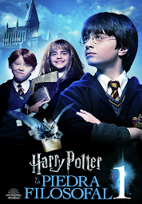
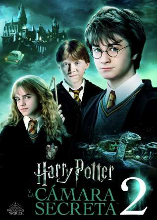
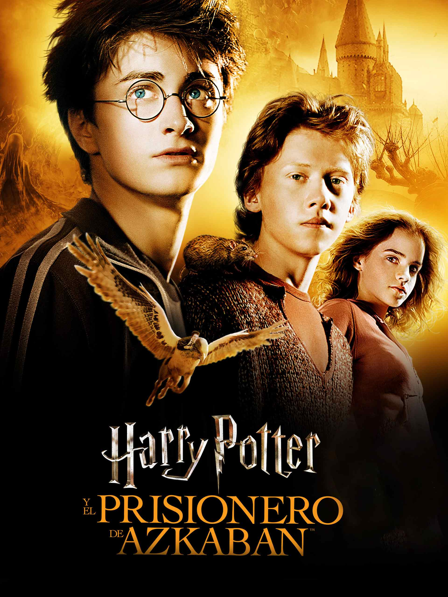
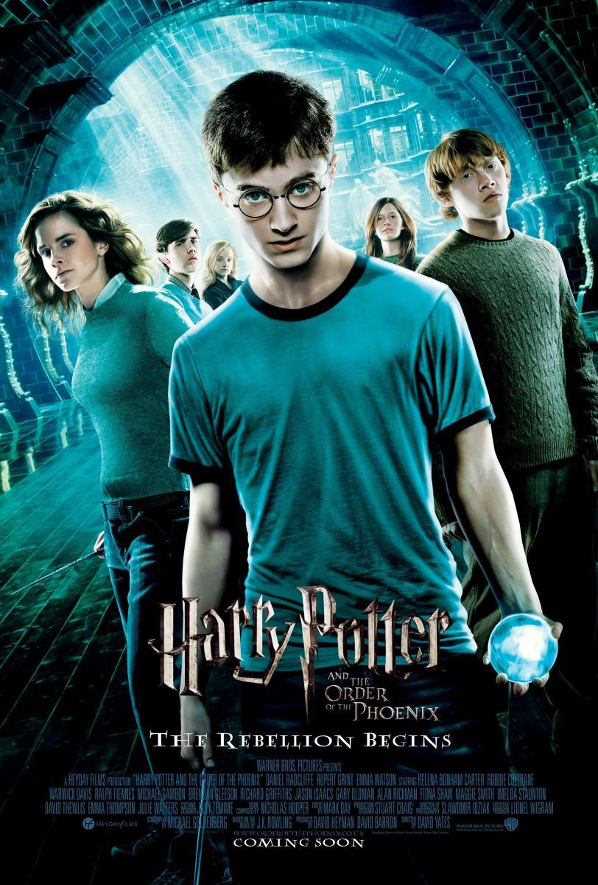
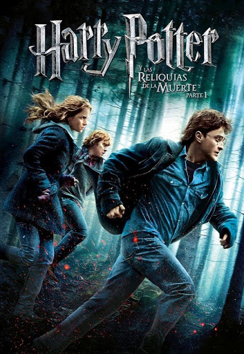

'La Piedra Filosofal'

Chris Columbus
'La Cámara Secreta'

Chris Columbus
'El Prisionero de Azkaban'

Alfonso Cuarón
'El Cáliz de Fuego'

Mike Newell
'La Orden del Fénix'

David Yates
'El Príncipe Mestizo'

David Yates
'Las Reliquias de la Muerte 1'

David Yates
'Las Reliquias de la Muerte 2'

David Yates